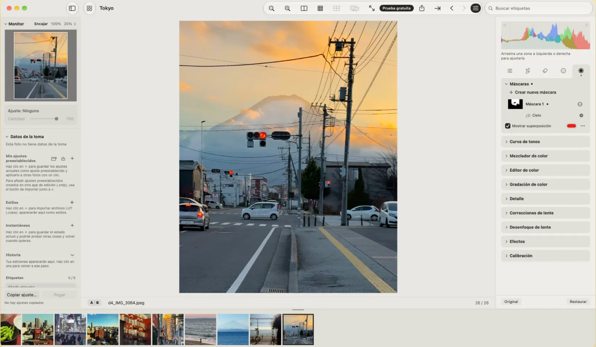

AJUSTES
Todo lo necesario para revelar una foto, desde el primer ajuste de exposición hasta el color final.

Luz y color
Exposición, contraste, iluminaciones, sombras, blancos, negros, textura, claridad, neblina, intensidad y saturación, con tono automático (⌘U · Ctrl+U) y aviso de recorte (J).
Balance de blancos
Temperatura y matiz, ajustes como Luz de día, Nublado y Tungsteno, y un cuentagotas (W).
Curva de tonos y mezclador de color
Curva de puntos en RGB o por canal, un mezclador de 8 colores de tono, saturación y luminancia, y una mezcla de blanco y negro.
Gradación de color y editor de color
Ruedas para sombras, medios tonos, iluminaciones y global, y un editor de color que puede crear un rango de tono de piel a partir de las caras detectadas.
Máscaras
Sujeto, cielo, fondo, personas, objetos (con un clic), pincel con máscara automática, degradados lineal y radial, rango de color y de luminancia. Suma, resta, interseca o invierte.
Detalle, lente y efectos
Enfoque, reducción de ruido, corrección por perfil de lente, eliminación de aberración cromática, transformación, desenfoque de lente con IA, viñeta y grano.
Recorte y enderezado
Proporciones de 16:9 a cuadrado, voltear, cuadrícula de tercios y enderezado automático que encuentra el horizonte.
Ajustes preestablecidos, looks e historial
Importa ajustes .xmp (cantidad 0–200 %) y looks .cube, toma instantáneas, recorre el historial, divide antes/después y pega ajustes en muchas fotos a la vez.
Editor RAW rápido por carpetas
Descarga gratuita, con 30 días de prueba gratis de todas las funciones. Requiere macOS 26 o posterior. Windows 10 (64 bits) o posterior.